JournalReal-Time Neuroadaptive Control with Tactile Calibration for Physical Human-Robot Interaction
Electronics (MDPI), 2026
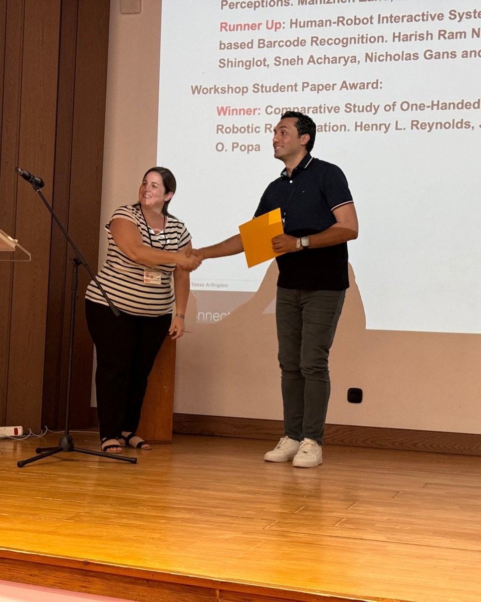
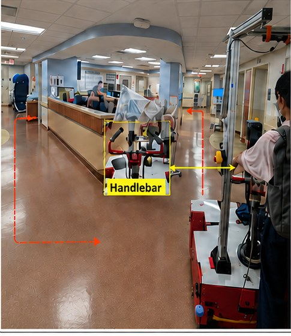
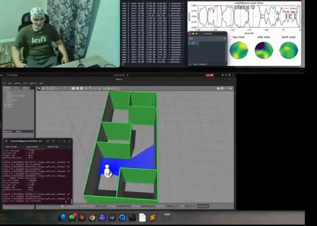
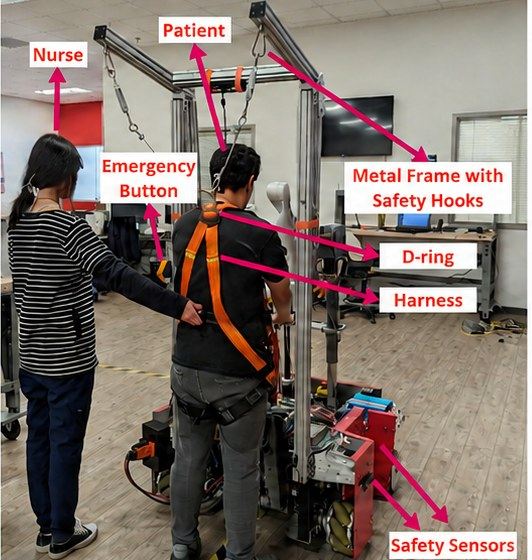
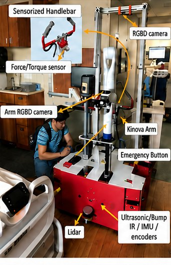
I am a Ph.D. candidate and Graduate Research Assistant at the Louisville Automation and Robotics Research Institute (LARRI), University of Louisville, advised by Dr. Dan O. Popa. I work on AI-driven brain-computer interfaces (BCIs), multimodal signal processing, adaptive robotic control, and human-robot interaction.
My NSF-supported research focuses on decoding human intent in real time from EEG, physiological, behavioral, and speech signals to improve assistive mobility, rehabilitation robotics, patient-assistance systems, and industrial automation.
Dissertation Robust Brain-Computer and Multimodal Interfaces for Adaptive Shared Control in Human-Robot Interaction
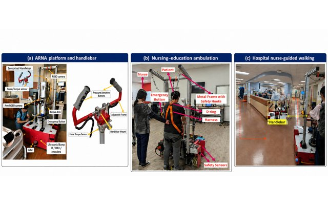
Real-time motor-intent decoding, robustness of motor-imagery BCIs across sessions and time, and BCI control of assistive robots.
Neuroadaptive controllers and adaptive user interfaces that make robot teleoperation and physical interaction smoother and safer.
The Adaptive Robotic Nursing Assistant (ARNA): patient ambulation, tactile sensing, adverse-event detection, and hospital deployment.
EEG, speech, and physiological signals; computer vision for logistics automation; compressed sensing for wireless health monitoring.
JournalReal-Time Neuroadaptive Control with Tactile Calibration for Physical Human-Robot Interaction
Electronics (MDPI), 2026
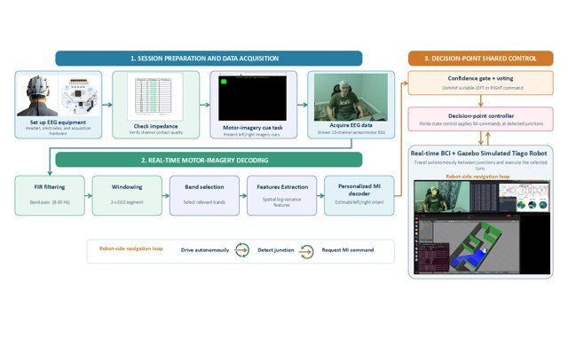
JournalA Dual-Validation Framework for Temporal Robustness Assessment in Brain-Computer Interfaces for Motor Imagery
Technologies (MDPI), vol. 13, no. 12, art. 595, 2025
JournalEvaluation of a Neuroadaptive Admittance Controller for Ambulation through Physical Human-Robot Interaction
Intelligent Service Robotics (Springer), 2025
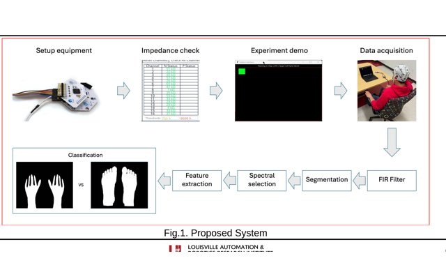
JournalAdaptive User Interface with Parallel Neural Networks for Robot Teleoperation
IEEE Robotics and Automation Letters (RA-L), 2024; presented at ICRA 2025
ConferenceAssessment of BCI Performance for Human-Robot Interaction
ACM 17th PETRA Conference, 2024
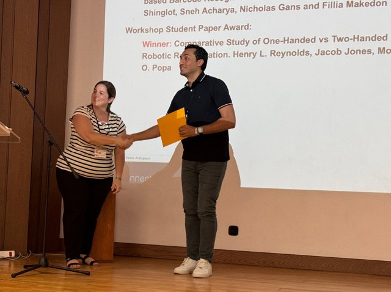
ConferenceComparative Study of One-Handed vs. Two-Handed EEG Intent Recognition for Applications in Human-Robot Interaction
ACM 17th PETRA Conference, 2024 Best Workshop Student Paper Award
JournalRakeness with Block Sparse Bayesian Learning for Efficient ZigBee-Based EEG Telemonitoring
International Journal of Communication Systems (Wiley), 2019
ConferenceCompressed Sensing for Reliable Body Area Propagation with Efficient Signal Reconstruction
29th International Conference on Microelectronics (ICM), 2017
JournalTactile Handlebar and Deep Learning for Safe Interaction with a Robot Nursing Assistant
Submitted to IEEE Transactions on Medical Robotics and Bionics, 2026
PosterThe Effects of Child Age and Hearing Status on Prosodic Characteristics of Maternal and Paternal Speech
191st Meeting of the Acoustical Society of America, Baltimore, MD (December 15 to 17)
PosterMotor Imagery as a Discrete Intent Cue for Assistive Robot Navigation
IEEE BRAIN Discovery and Neurotechnology Workshop, Washington, DC (November 11 to 13)
PosterOutcomes Important for a Successful Transition from Foster Care to Adulthood in Kentucky
11th Annual Engaged Scholarship Symposium, University of Louisville
AttendedAdaptive User Interface with Parallel Neural Networks for Robot Teleoperation
IEEE ICRA 2025, where our RA-L paper was presented
TalkAssessment of BCI Performance for Human-Robot Interaction
ACM PETRA 2024, with a workshop paper that won the student paper award, and the NSF Doctoral Consortium
PosterControlling a Robotic Arm with Brain Activity via a Binary Classifier
KY NSF EPSCoR SUPERCOLLIDER, Lexington, KY
PosterPersonalized Adaptive User Interfaces for Robot Teleoperation
KY NSF EPSCoR SUPERCOLLIDER, Lexington, KY
TalkCompressed Sensing for Reliable Body Area Propagation with Efficient Signal Reconstruction
29th International Conference on Microelectronics (ICM)
Also attended IEEE SoutheastCon 2026.
Kentucky Advanced Manufacturing Partnership for Enhanced Robotics and Structures. BCI, adaptive robotic control, and human-robot interaction; Study Coordinator.
NSFEnhancing Future Work of Nursing Professionals through Collaborative Human-Robot Interfaces, built around the ARNA nursing-assistant robot.
NSFComputer vision for object detection, grasp efficiency, and barcode identification in logistics automation (Phases I and II).
IndustryAI-enabled analysis of emotions in daylong child-centered speech recordings, with UofL and Washington State University.
Seed GrantTools for recording EEG motor-imagery sessions.
PythonMotor-imagery classification and evaluation code.
PythonEEG motor-imagery data for hand and foot movements.
DatasetMATLAB pipeline for analyzing LENA recordings, classifying interactions, and computing pitch and loudness measures.
MATLABGraduate Research Assistant: AI, BCI, Robotics, and HRI Sep 2023 to present
LARRI, University of Louisville
EEG-based BCI frameworks, neuroadaptive control, ARNA healthcare robotics, and computer vision for logistics. Mentor a multidisciplinary student BCI team.
Research Collaborator: Multimodal Speech and Healthcare Analytics Jan 2026 to present
University of Louisville and Washington State University
Automated acoustic-analysis pipelines and speech emotion recognition for child-centered speech recordings.
Graduate Research Assistant: Computer Vision and Assistive Technologies Jan 2022 to Aug 2023
CVIP Laboratory, University of Louisville
Visual assistance for visually impaired people; 3D street mapping from monocular video with NeRFs.
Research Assistant 2015 to 2021
Electronics and Communications Engineering, Zagazig University, Egypt
Compressed sensing and block sparse Bayesian learning for low-power EEG telemonitoring over body area networks.
Graduate Teaching Assistant 2023 to 2026
Department of Electrical and Computer Engineering, University of Louisville
Taught and supported labs in control systems, digital signal processing, embedded systems, and advanced microprocessors. I also reworked several lab handouts and grading rubrics.
Teaching Assistant 2015 to 2021
Department of Electronics and Communications Engineering, Zagazig University, Egypt
Led tutorials and labs in signal and image processing, analog and digital communications, logic design, electronic circuits, wave propagation, and numerical analysis. Supervised undergraduate capstone projects.
Ph.D., Electrical and Computer Engineering 2022 to present
University of Louisville, USA · GPA 3.89/4.00
M.S., Electronics and Communications Engineering 2015 to 2019
Zagazig University, Egypt
Thesis: Compressed Sensing for Energy-Efficient Wireless Transmission
B.S., Electronics and Communications Engineering 2008 to 2013
Zagazig University, Egypt
Excellent with honors; ranked 1st in class
Students I have mentored in the lab, most of them as coauthors on our papers.
Henry L. Reynolds
Compared one handed and two handed EEG intent recognition for robot control. His PETRA 2024 paper won the workshop student paper award.
Jacob Jones
EEG intent recognition for human robot interaction; coauthor on both PETRA 2024 papers.
Desmond Harris
Worked on BCI performance assessment and EEG intent recognition. Coauthor on two PETRA 2024 papers.
Saykhun Yusufjonov and Djaykhun Yusufjonov
Hand and foot motor imagery decoding, and how stable those decoders stay across sessions. Our work appeared at PETRA 2025 and in Technologies, and Saykhun went on to the IROS 2026 workshop paper. He was also my Mind Pilot teammate.
Hunter Graiser
Undergraduate research assistant in the lab.
Mourad Gad
Summer research intern.
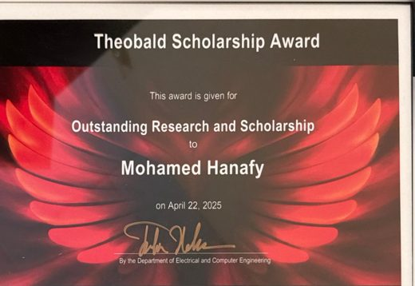
Theobald Scholarship Award
Department of Electrical and Computer Engineering, J.B. Speed School of Engineering · April 2025
Given for research and scholarship. The Edward J. and Eunice B. Theobald Scholarship Fund pays for it and supports electrical engineering students at Speed School.
NSF Doctoral Consortium
ACM PETRA · 2024 and 2025
Selected two years in a row. A small group of PhD students meets with senior researchers, and each student gets direct feedback on the dissertation plan.
Outstanding Poster Presentation Award
Kentucky NSF EPSCoR · 2024
Poster award at the statewide Kentucky NSF EPSCoR meeting.
Students as Leaders Mini Grant
Coalition on Adult Basic Education (COABE) · January 2025
A national award for student leaders in adult education. It came with an invitation to the COABE conference in Dallas.
First in Class and College Excellence Award
Faculty of Engineering, Zagazig University · 2008 to 2013
I finished first in my undergraduate class. The college excellence award followed in each of the five years.
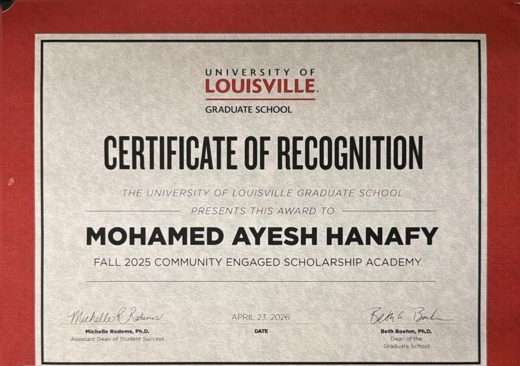
Community Engaged Scholarship Academy
UofL Graduate School · Fall 2025
A semester of sessions on research done in partnership with community groups. The certificate was handed out at the 2026 Graduate Dean’s Reception.
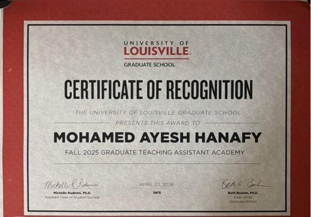
Graduate Teaching Assistant Academy
UofL Graduate School · Fall 2025
An introduction to teaching in higher education. I took it while teaching ECE labs in control systems, signal processing, and embedded systems.
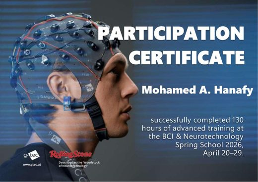
BCI & Neurotechnology Spring School
g.tec medical engineering · April 20 to 29, 2026
Ten days of lectures and practical sessions on brain computer interfaces, 130 hours in total.
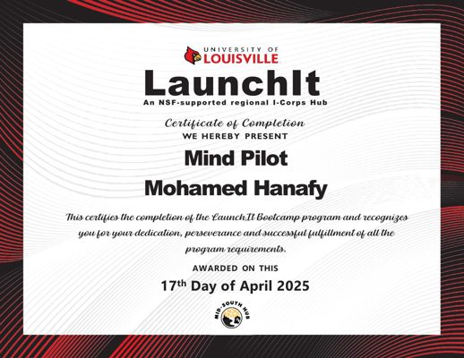
LaunchIt Product Innovation Bootcamp
University of Louisville, NSF supported regional I-Corps Hub · Spring 2025
Completed with Saykhun Yusufjonov for our Mind Pilot concept. The cohort closed with a public showcase in April 2025.
International Symposium on Embodied Intelligence and Humanoid Robots (Roboi), 2025.
Redbird Robotics; VEX V5RC Kentucky State Championship.
Louisville Automation and Robotics Research Institute (LARRI)
University of Louisville, Louisville, KY, USA
mohamed.hanafy@louisville.edu